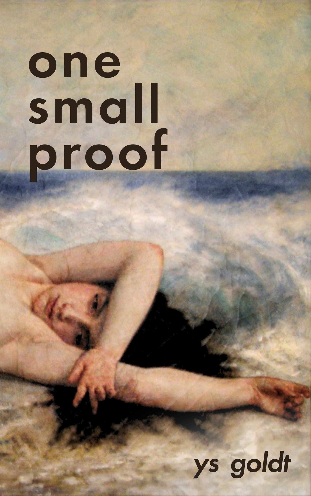

Short story
One Small Proof
After loss leaves Taloa alone at the edge of her village, the ocean becomes the one place that asks nothing of her. Then, one morning, it gives something back.
One Small Proof is a quiet short story about grief, tenderness, and the strange ways a brief connection can outlast even the people who made it.
- Author
- Ys Goldt
- Publisher
- Nachtljocht Press
- Publication
- 2026-11-06
- Paperback edition
- ISBN 9798996205240 · 32 pages
- Digital edition
- No ISBN listed